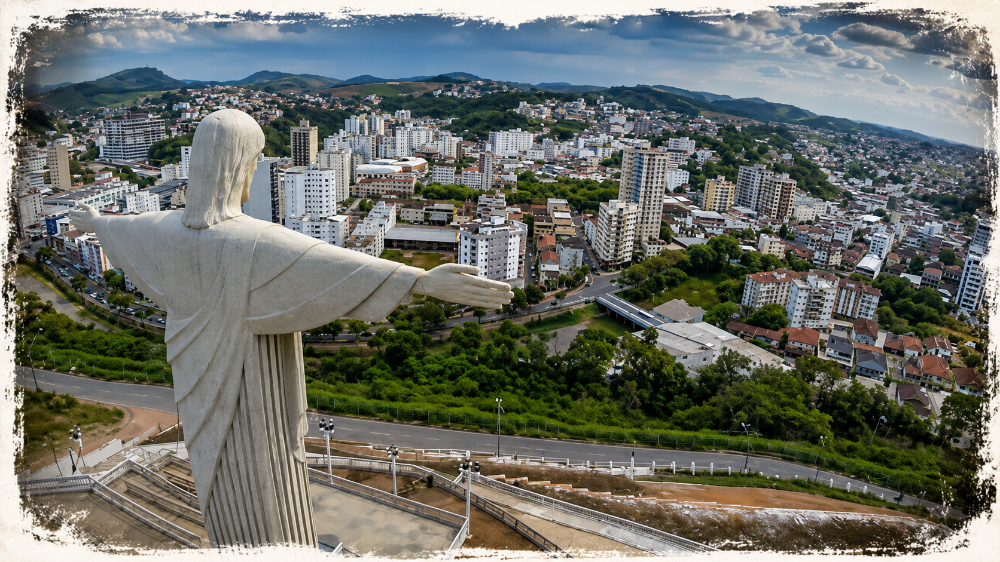
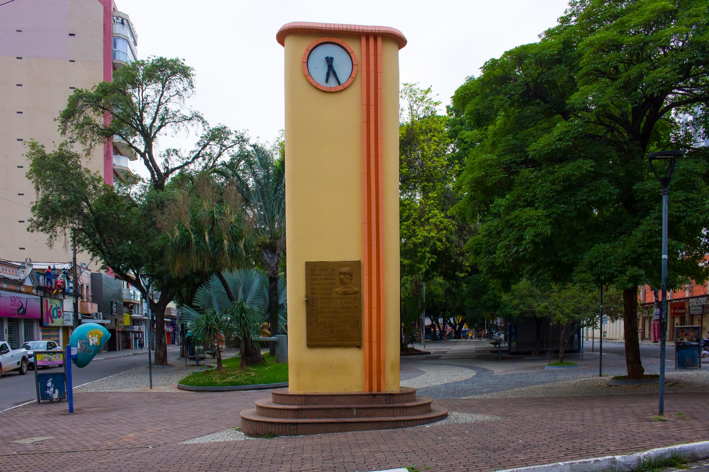
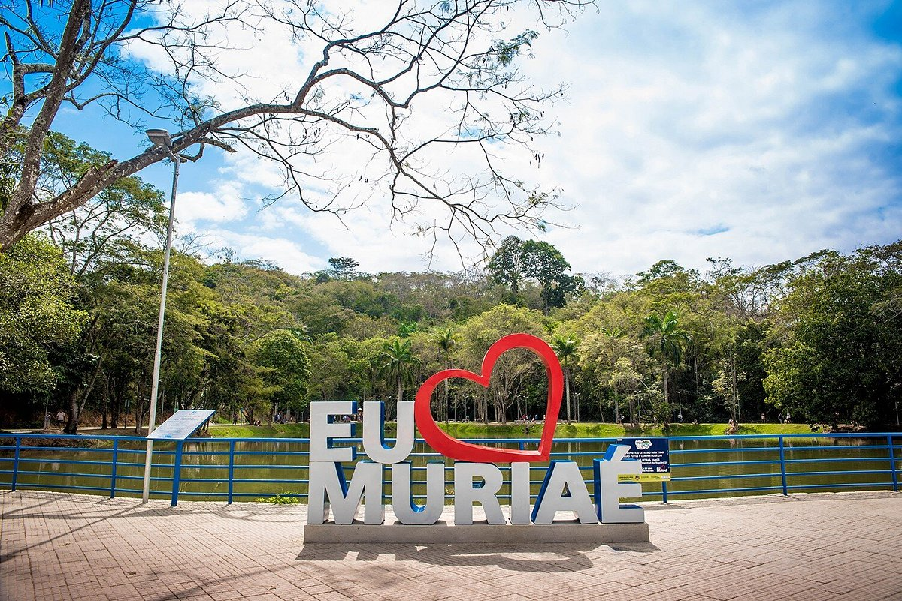

Cristo Redentor
Destaque: Um dos maiores símbolos de Muriaé, o Cristo Redentor oferece uma vista panorâmica incrível da cidade. O local é ideal para contemplação, fotografias e momentos de tranquilidade, sendo um dos destinos turísticos mais visitados por moradores e turistas.
Um local perfeito para fotografias e contemplação do fim de tarde.

Praça João Pinheiro
Destaque: Localizada no coração de Muriaé, a Praça João Pinheiro é um dos pontos mais tradicionais da cidade. Com jardins bem cuidados, bancos, monumentos e um ambiente acolhedor, é o lugar perfeito para passear, relaxar e apreciar a história e a cultura local, além de estar cercada por comércios, cafés e importantes construções históricas.

Lagoa da Gávea
Destaque:Um dos principais cartões-postais de Muriaé, a Lagoa da Gávea encanta por sua beleza natural e ambiente tranquilo. Ideal para caminhadas, esportes, lazer e contato com a natureza, é um espaço revitalizado que recebe eventos e proporciona momentos inesquecíveis para moradores e visitantes.